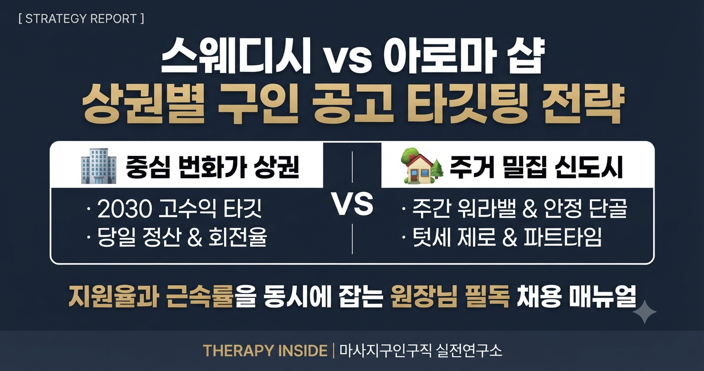
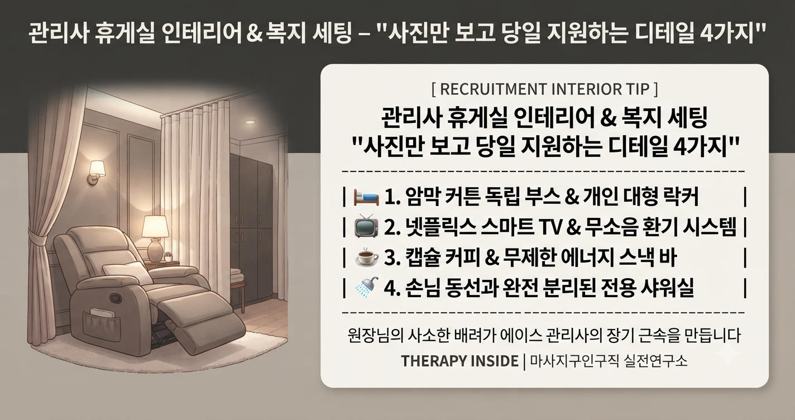
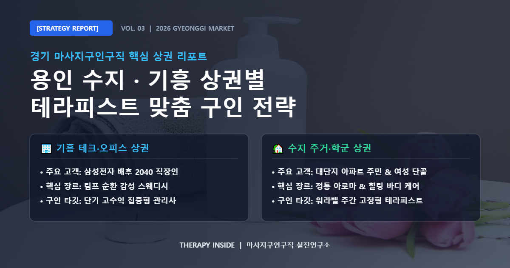

“막연한 구직 대신 투명한 데이터를, 단순한 공고 나열 대신 지속 가능한 커리어 성장을 전합니다.”
테라피 인사이드(Therapy Inside)는 국내 웰니스 및 마사지 업계의 건강하고 신뢰할 수 있는 구인구직 생태계를 위해 현장 맞춤형 일자리와 우수 인재 연결용 전문 실무 데이터를 공유하는 실전 아카이브입니다.
본 연구소는 구직자에게는 안전하게 성장할 수 있는 일터를, 원장님에게는 샵의 가치를 높일 수 있는 훌륭한 파트너를 연결합니다. 단순한 중개를 넘어, 건전한 테라피 문화 조성과 테라피스트의 권익 보호를 지향합니다.

매장의 주력 코스와 상권 특성을 결합하여 지원자의 라이프스타일에 맞춘 타깃팅 노하우 및 급여 시뮬레이션 제시법을 정리합니다.

지원자가 공고 사진을 확인하자마자 당일 지원을 결심하게 만드는 독립 휴식 부스, 전용 샤워 동선 등 4대 핵심 포인트를 공개합니다.

기흥 테크밸리와 수지 학군·주거 상권의 특성을 비교하고, 테라피 장르별 맞춤형 공고 헤드카피와 지원율 극대화 팁을 정리합니다.